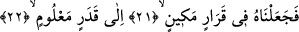
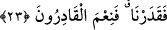
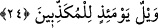

değersizliği azlığından ve hakirliğinden kaynaklanmaktadır. İnsan her yere attığı ve
önem vermediği bir şeyi koruma altına almaz. Korumadığında ise onu hor görmüş, değer
vermemiş olur. Buna göre âyet-i kerîmede denmiş oluyor ki, Biz sizi değersiz bir
meniden yarattık.
21- 22. İşte o suyu, belli bir süreye kadar sağlam bir yere yerleştirdik.
“İşte o suyu” Allah’ın doğum için takdir ettiği “belli bir süreye kadar”, doğum için
takdir edilen bu süre dokuz ay veya daha az ya da daha çoktur. “Sağlam bir yere”
rahime; yâni annenin karnındaki özel yere “yerleştirdik.”
Âyette “rahim” anlamına “karar” kelimesi kullanılmıştır. Arapçada karar, istikrar yeri
demektir. Aynı âyetteki “mekîn” kelimesi ise sağlam bir yer, koruma altındaki yer
anlamına gelmektedir. Buna göre âyete mânâ, Biz bu suyu sağlam koruma altına alınmış
bir yere yerleştirdik. Her türlü tehlikeden korunmuş olarak orada yerleştirdik.
Özet olarak burada denmiş oluyor ki; Biz o suyu belli bir zamana kadar orada kalmak
üzere bıraktık.
23. Biz buna güç yetirmişizdir. Ve bizim gücümüz ne büyüktür!
“Biz bunu” Onun yaratılış ile organ, aza, renk, ana rahmindeki kalış süresi ve hayatını
“takdir ettik.” Bu kelimenin “takdir etme” anlamına olduğunu Nâfî’nin ve el-Kisâî’nin
kırâatleri te’yid etmektedir.
“Biz ne güzel takdir edicileriz.” İbn Mes’ûd bu âyetteki fiilin “takdir etmek”
anlamına olduğu kanâatini benimsemiştir. Bununla birlikte yukarıdaki fiilin “güç
yetirmek” anlamına gelmesi de mümkündür. Buna göre; Biz dilediğimiz biçim ve
istediğimiz şekilde onu hakir ve değersiz maddeden yaratmaya ve biçimlendirmeye
kadiriz, denmiş olmaktadır. Bu durumda “kudret”ten maksad; yaratığın yoktan var
edilmesine bilfiil eşlik eden kudret şeklinde olmuş olur. Bu anlamı âyetin devamındaki
ifâdeler güçlendirmektedir: Biz ne güzel güç yetireniz. Onu kendi gücümüzle yarattık ve
en güzel şekle, biçime soktuk, denmiş olur.
24. O gün (hakîkatleri) yalan sayanların vay hâline!